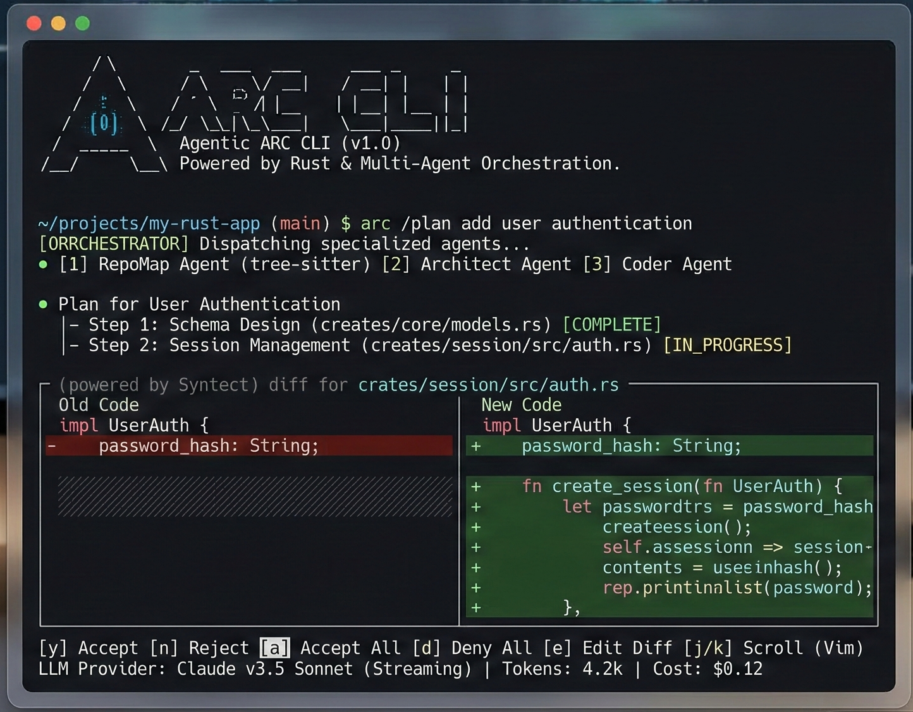

ARC CLI
A native agentic CLI that reasons over codebases. One binary. No runtime. Works offline. 31 crates. <20ms cold boot.
# Linux / macOS
curl -fsSL https://raw.githubusercontent.com/Ashutosh0x/arc-cli/main/install.sh | sh
# Windows (PowerShell)
irm https://raw.githubusercontent.com/Ashutosh0x/arc-cli/main/install.ps1 | iex
# From source
cargo install --git https://github.com/Ashutosh0x/arc-cliARC uses OnceLock + LTO compilation, SIMD-accelerated SSE parsing, bumpalo arena allocators, and HTTP/2 connection pooling.
| ARC | Claude Code | Gemini CLI | |
|---|---|---|---|
| Written in | Rust | Node.js | Node.js |
| Cold start | <20ms | ~500ms | ~400ms |
| Binary size | ~15MB | ~200MB+ | ~150MB+ |
| Runtime deps | None | Node 18+ | Node 18+ |
| Offline mode | Ollama | No | No |
| Providers | 6 | Anthropic only | Google only |
| Unsafe code | forbid(unsafe) | N/A | N/A |
Getting Started
Install ARC CLI and start reasoning over your codebase in minutes.
Installation
Quick Install (Recommended)
curl -fsSL https://raw.githubusercontent.com/Ashutosh0x/arc-cli/main/install.sh | shirm https://raw.githubusercontent.com/Ashutosh0x/arc-cli/main/install.ps1 | iexFrom Source
cargo install --git https://github.com/Ashutosh0x/arc-cliPrerequisites
- Rust 1.89+ — Install via
rustup(only for building from source)
Quick Start
1. Initialize — Run the configuration wizard to set API keys and default models:
arc setup2. Start a session — Launch the interactive REPL:
arc chat # start a session
/plan "add OAuth2 login" # generate a plan, review it
/provider groq # switch to Groq (Llama 3.3 70B)
/model grok-4-1-fast-non-reasoning # switch model
/checkpoint # snapshot current state
/rewind 3 # undo to checkpoint 3
/compact # compress context window3. Single-shot autonomous agent:
arc run "Refactor src/logging to use tracing instead of stdout"4. AI-powered PR review:
arc review # PR critique via 6 specialized agentsarc auth login --provider anthropic to store credentials securely.
Features
ARC delivers a comprehensive set of capabilities for AI-powered code reasoning.
Multi-Provider AI Engine
Seamlessly switch between AI providers without changing your workflow. Each provider is a first-class citizen with full streaming support.
- OpenAI — GPT-4o, GPT-4o-mini, o1, o3-mini and all chat models
- Anthropic — Claude Sonnet 4, Claude Haiku and all Claude models
- Google Gemini — Gemini 2.0 Flash, Gemini Pro and all Gemini models
- Groq — Llama, Mixtral, Gemma at blazing inference speeds
- xAI Grok — Grok-2 and Grok-beta models
- Ollama — Run any open-source model locally, fully offline
- DeepSeek — DeepSeek-R1, DeepSeek-V3 reasoning models
Knowledge Graph (RAG)
Built-in codebase understanding via a knowledge graph that maps your project's structure, dependencies, and relationships using petgraph.
- Automatic codebase indexing and graph construction
- Language-agnostic file analysis with Tree-sitter
- Dependency relationship tracking
- Context-aware code retrieval for AI queries
Interactive REPL
A rich terminal UI with full editing, history, and multi-line support powered by rustyline.
- Syntax-highlighted input
- Persistent session history
- Multi-line editing with bracket matching
- Slash commands for navigation and control
- Tab completion for commands and file paths
Security & Privacy
Enterprise-grade security built from the ground up.
- Credential Manager — Secure API key storage with OS keyring integration
- Prompt Guard — Sanitization layer for safe prompt construction
- Config Guard — Protection against configuration tampering
- Gitignore-aware — Respects .gitignore patterns, never processes excluded files
Developer Experience
- Real-time Streaming — Token-by-token responses with formatted markdown
- Rich Markdown Rendering — Beautiful terminal output with syntax highlighting
- Session Persistence — Save and resume conversations across sessions
- File Operations — Read, write, and patch files directly from the REPL
- Git Integration — Generate diffs, commit messages, and changelogs
Commands
Complete reference for all available ARC CLI commands.
CLI Commands
| Command | Description |
|---|---|
arc chat | Start an interactive session |
arc init | Bootstrap ARC config in a repo |
arc setup | Configuration wizard — set API keys and default models |
arc doctor | Run diagnostics on your setup |
arc review | AI-powered PR review via 6 specialized agents |
arc run "task" | Single-shot autonomous agent execution |
arc --stats | Token usage and cost tracking |
arc graph index | Index codebase into knowledge graph (64 languages) |
arc graph search <pattern> | Structural search: functions, classes, types |
arc graph trace <fn> | Call graph — who calls what, BFS depth 1-5 |
arc graph architecture | Architecture overview: layers, clusters, hotspots |
arc graph impact | Map git diff → affected symbols + risk scores |
arc graph query <cypher> | Execute Cypher-like graph queries |
REPL Commands
| Command | Description |
|---|---|
/plan [task] | Generate and review a modification plan |
/provider [name] | Switch provider live (anthropic, groq, xai, openai) |
/model [name] | Switch model (e.g. grok-4-1-fast-non-reasoning) |
/checkpoint | Save session state to redb |
/rewind [id] | Restore a previous checkpoint (time-travel) |
/compact | Compress context window |
/status | Show current provider, model, message count |
/memory [k] [v] | Persistent key-value store |
/fork [name] | Branch the conversation |
/security-review | Scan diffs for 9 vulnerability patterns |
/copy | Interactive code block picker and copy |
Providers
ARC supports multiple AI providers out of the box. Configure any combination for your workflow.
Supported Providers
| Provider | Env Variable | Models | Context |
|---|---|---|---|
| Anthropic | ANTHROPIC_API_KEY | claude-sonnet-4-20250514, claude-3-haiku | 200K |
| Groq (LPU) | GROQ_API_KEY | llama-3.3-70b-versatile, mixtral-8x7b | 128K |
| xAI Grok | XAI_API_KEY | grok-4.20-0309, grok-4-1-fast | 2M |
| OpenAI | OPENAI_API_KEY | gpt-4o, gpt-4o-mini, o3-mini | 128K |
| Google Gemini | GEMINI_API_KEY | gemini-2.5-pro, gemini-2.5-flash | 1M |
| Ollama | — (local) | llama3.1, codellama, deepseek-coder | Varies |
Configuration
Providers can be configured via environment variables or in the config.toml file:
[default]
provider = "anthropic"
model = "claude-sonnet-4-20250514"
[providers.openai]
api_key_env = "OPENAI_API_KEY"
default_model = "gpt-4o"
[providers.anthropic]
api_key_env = "ANTHROPIC_API_KEY"
default_model = "claude-sonnet-4-20250514"
[providers.ollama]
host = "http://localhost:11434"
default_model = "llama3"Architecture
ARC is built as a modular Rust workspace with seven specialized crates working together.
Crate Structure
Data Flow
(REPL UI)"]:::main --> B["arc-core
(Orchestrator)"]:::main B --> C["arc-provider
(AI APIs)"] B --> D["arc-config
(Config)"] B --> E["arc-analyzer
(Tree-sitter)"] B --> F["knowledge-graph
(RAG)"]
Platform Support
| Platform | Status | Notes |
|---|---|---|
| macOS (arm64/x86) | Full Support | Primary development platform |
| Linux (x86_64) | Full Support | CI tested on Ubuntu |
| Windows (x86_64) | Full Support | MSVC toolchain |
| Linux (arm64) | Full Support | Cross-compiled binaries |
Changelog
All notable changes to ARC CLI.
v1.0.0 — Initial Release
- Complete multi-provider AI engine with OpenAI, Anthropic, Google Gemini, Groq, xAI Grok, DeepSeek, and Ollama support
- Interactive REPL with syntax highlighting, session persistence, and multi-line editing
- Knowledge graph (RAG) for codebase-aware AI responses using petgraph
- Security modules: credential manager, prompt guard, config guard
- Real-time streaming with rich Markdown rendering in the terminal
- Tree-sitter integration for language-agnostic source code analysis
- Cross-platform support: macOS, Linux, Windows on x86_64 and arm64
Recent Changes
- New: Added Groq provider with Llama 3.3 and Mixtral support at ultra-fast inference speeds
- New: Added xAI Grok provider with Grok-2 and Grok-beta models
- New: Multi-provider REPL — switch providers mid-conversation with
/provider - New: Session persistence — save and resume conversations across sessions
- New:
arc providerscommand to list all configured providers and their status - Improved: Enhanced streaming performance with buffered token processing
- Improved: Better error handling for rate limits and authentication failures
- Fixed: Resolved UTF-8 decoding issues in streaming responses
- Fixed: Corrected TOML parsing for nested configuration values
- Fixed: Resolved credential manager issues on Linux with missing keyring daemon